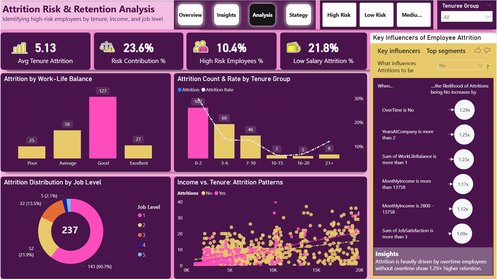

📊 HR Analytics: Employee Attrition Intelligence
1,470
Employees Analyzed
16.1%
Overall Attrition
10.4%
High‑Risk Flagged
$1.2M+
Annual Savings*
📸 Dashboard Gallery (Click any image to zoom)

Page 1: Executive Overview – Workforce Snapshot

Page 2: Drivers – Root Cause Analysis

Page 3: Analysis – Risk Prediction & AI Key Influencers

Page 4: Strategy – Prioritized Recommendations & ROI
The Insight That Changed Everything
Employees who rated their work‑life balance as "Good" had the highest attrition count (127) — not "Poor" or "Average."
This revealed that attrition isn't always dissatisfaction. Sometimes it's hidden structural pressure — workload creep, stalled careers, unmet expectations — masked by a score that looks fine on paper.
🔍 Key Data‑Driven Insights
- Overtime = 3× higher attrition – 31% vs 9% baseline
- 41% of exits happen in first 2 years – an onboarding failure
- Sales Representatives: 39.8% attrition – highest of any role
- Job Level 1 drives 60% of attrition – entry‑level most vulnerable
- Promotion gap >4 years doubles risk – median gap 3 years for leavers vs 2 for stayers
- AI Key Influencers: No overtime → 1.29× retention; Tenure >2y → 1.25×; Income >$13,758 → 1.17×
⚙️ Code & Technical Implementation
-- Tenure cohort creation
SELECT
EmployeeID,
CASE
WHEN YearsAtCompany <= 2 THEN '0-2'
WHEN YearsAtCompany <= 6 THEN '3-6'
WHEN YearsAtCompany <= 10 THEN '7-10'
WHEN YearsAtCompany <= 15 THEN '10-15'
ELSE '15+'
END AS TenureGroup
FROM Employees;
-- Aggregated view for dashboards
SELECT
Department,
COUNT(*) AS TotalEmployees,
SUM(CASE WHEN Attrition = 'Yes' THEN 1 ELSE 0 END) AS AttritionCount,
AVG(MonthlyIncome) AS AvgMonthlyIncome
FROM EmployeeMaster
GROUP BY Department;# Overtime vs Satisfaction heatmap – critical insight
pivot = pd.pivot_table(df, values='Attrition_Flag',
index='JobSatisfaction',
columns='OverTime')
sns.heatmap(pivot, annot=True, cmap='Reds')
plt.title("High Risk: Overtime vs Low Satisfaction")
# Correlation analysis
corr = df[['AttritionFlag', 'OverTime', 'JobSatisfaction',
'YearsAtCompany', 'YearsSinceLastPromotion']].corr()
sns.heatmap(corr, annot=True, cmap='coolwarm')// Risk Score – composite index for proactive flagging
Risk Score =
VAR OvertimeRisk = IF(Employees[OverTime] = "Yes", 0.3, 0)
VAR PromotionRisk = IF(Employees[YearsSinceLastPromotion] > 4, 0.25, 0)
VAR TenureRisk = IF(Employees[YearsAtCompany] <= 2, 0.2, 0)
VAR SatisfactionRisk = IF(Employees[JobSatisfaction] <= 2, 0.15, 0)
RETURN
OvertimeRisk + PromotionRisk + TenureRisk + SatisfactionRisk
// Retention Multiplier – quantifies impact of a factor
Retention Multiplier =
DIVIDE(
CALCULATE([Retention Rate], Employees[OverTime] = "No"),
[Retention Rate]
)🎯 Strategic Recommendations
- Audit overtime‑heavy roles – reduce 31% attrition by balancing workload or adding comp
- Redesign onboarding for first 2 years – implement 30‑60‑90 day checkpoints and mentorship
- Transparent promotion cycles – flag employees at year 3 to avoid >4 year gaps
Projected impact: 20–25% reduction in high‑risk attrition → $1M+ annual savings (based on 1.5× salary replacement cost).
📚 Full Project Resources